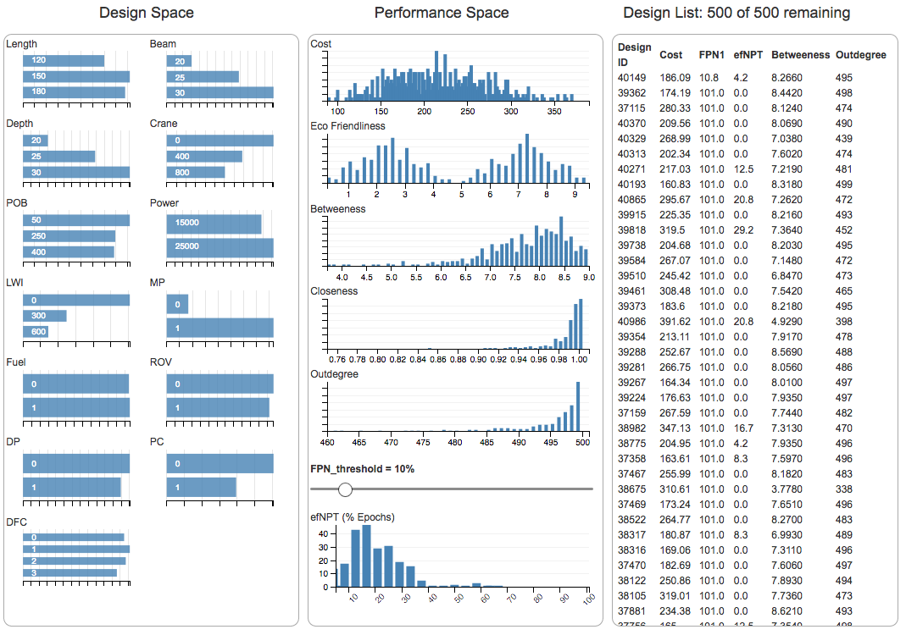
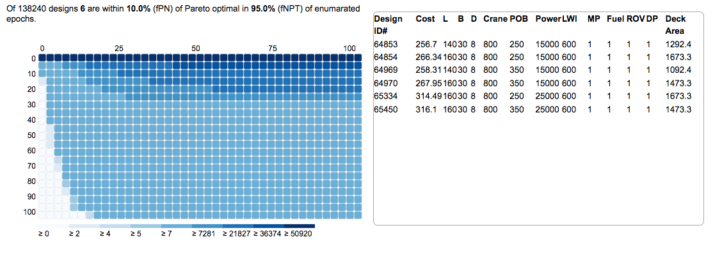
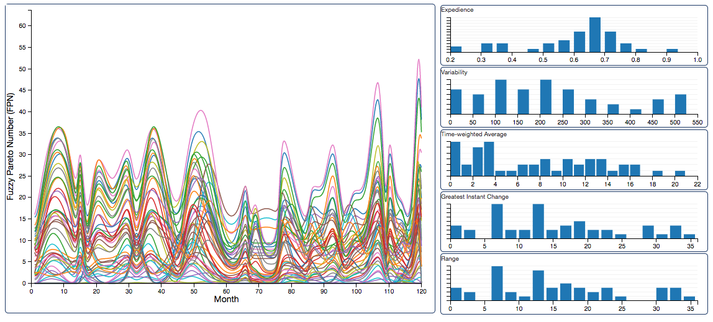
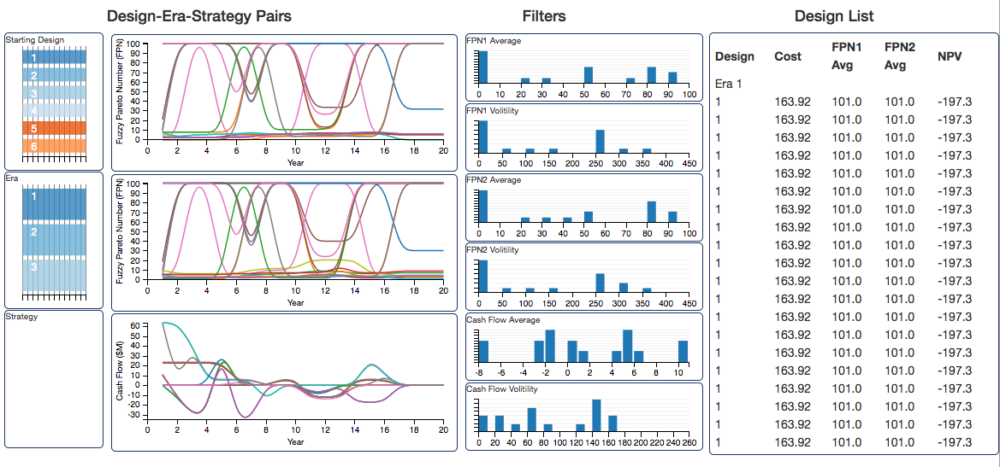
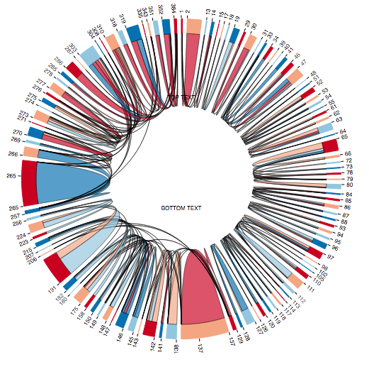

Description: Interactive scatter plot and parallel coordinates for primary contract epoch.
Description: Took 500 random samples of larger data set containing 41,204 designs. Examines multi-epoch matrics including efNPT and centrality metrics (betweeness, closeness, outdegree).
Description: Filtered transition matrices of larger data set containing 41,204 designs to look only at changability where the cost is less than $100M and change time is less than 90 days. Takes longer to load than the sampled data set, but contains all 41,204 designs. Examines multi-epoch matrics including efNPT and centrality metrics (betweeness, closeness, outdegree). Only a small subset of designs exhibit a high betweeness centrality which makes them difficult to see on the graph. Designs with high betweeness also tend to have relatively low outdegree in this case which may make this a good example of where trade-offs need to be made between the two metrics.
Filtered Version (OLAP)Description: Filtered OLAP version like above except updated to Carl's Jan 2017 version 2 dataset.
Description: Interactive Heatmap showing the trade-off between Pareto efficiency and Pareto Trace (frequency across epochs).
Description: Older example using spacetug era data to show how OLAP can be used with line graphs. Also implements time series metrics: expedience, average, range, greatest delta, and volitility.
Description: Work in progress on ship single era analysis. Needs update of version 2 case study data...
Description: Work in progress Another older example using spacetug era data to demonstrate how chord diagram may aid recognition of change option usage patterns.
